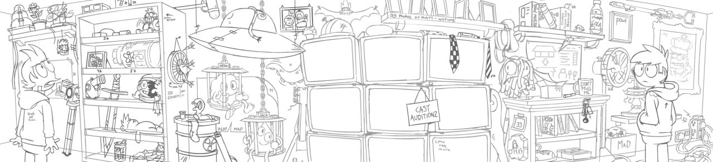
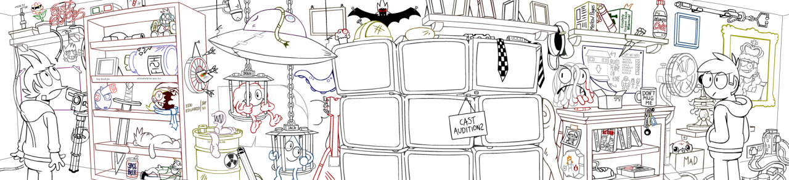
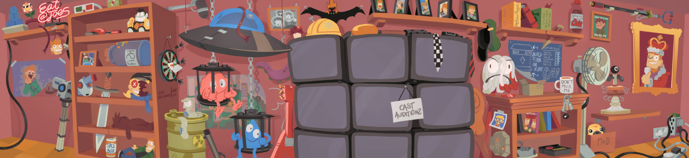

Ultimate Eddsworld fandom test, name all the references.
(click to enlarge)
Displayed above:
My rough drawing, my final outlines and the final painted results by Jos Venti.
Take a closer look at the final results right here!